Stay on defined paths
Protect the coastal ecosystem by staying on marked trails and not damaging the vegetation or any nesting grounds.
From seabirds and coastal plants to marine life below the waves, San Juan de Gaztelugatxe thrives through a delicate balance of nature.
Above the cliffs of Gaztelugatxe, seabirds and migratory species navigate seasonal winds and ocean currents, forming a vital aerial ecosystem along the Atlantic coast.
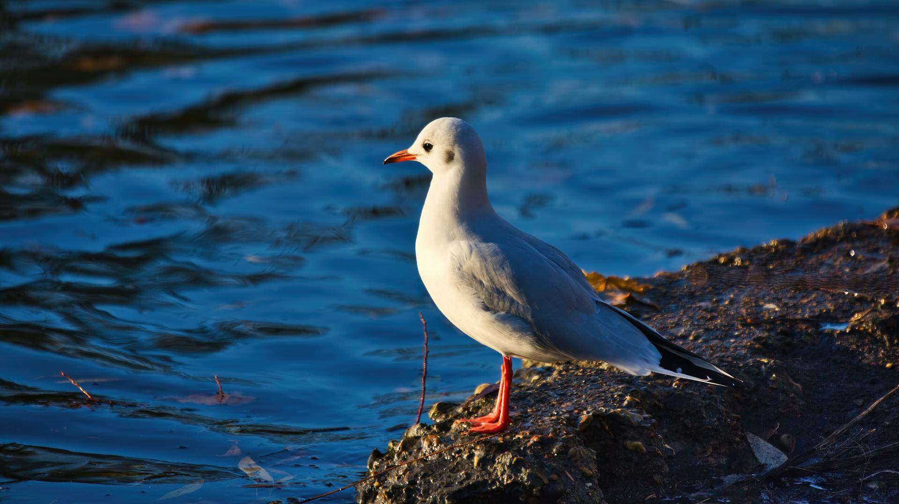
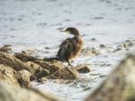
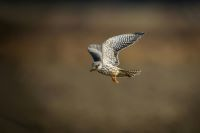
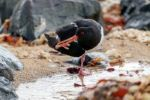
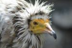
Larus michahellis is one of the most visible birds along the Basque coast. A versatile forager, it nests on sea-facing cliffs and feeds on fish, invertebrates, and scraps from nearby fishing boats.
The Yellow-legged Gull is one of the most characteristic birds of the Atlantic coast. With its bright yellow legs and powerful bill tipped with red, it is easy to identify year-round on the cliffs and rocky shores of Gaztelugatxe.
These birds nest in large colonies between April and July, occupying exposed ledges on the sea-facing cliffs. Both parents share incubation duties and are highly territorial, often diving at intruders that venture too close to the nest site.
As opportunistic omnivores, Yellow-legged Gulls adapt their diet to seasonal availability — feeding on marine invertebrates, small fish, and discards from fishing vessels. Their presence serves as a useful indicator of broader ecosystem health along the coastline.
Conservation efforts focus on monitoring colony sizes and reducing disturbance during the breeding season. Restricted access zones and visitor education programmes have helped stabilise population numbers in recent years.
The vegetation of Gaztelugatxe forms a layered mosaic shaped by wind, salt spray, and thin limestone soils.
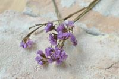
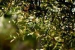
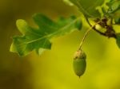
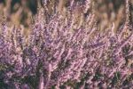
Limonium binervosum is a salt-tolerant cliff plant found on the exposed rock faces of Gaztelugatxe, adapted to survive wind, spray, and minimal soil.
Rock sea lavender grows in crevices and ledges along the steep cliffs, where few other plants can survive. Its low, tufted form helps it resist strong Atlantic winds and constant salt spray.
This species is one of the most characteristic plants of the Gaztelugatxe coastline, forming small patches of colour against otherwise bare rock.
It thrives in extremely thin soils, drawing nutrients from accumulated organic matter and moisture trapped in cracks in the limestone.
Together with other halophytes, it forms the first layer of vegetation in the vertical ecosystem of the cliffs.
Beneath the cliffs of Gaztelugatxe, a rich intertidal and subtidal world thrives, with barnacles, fish, cephalopods, and algae forming a complex Atlantic reef ecosystem.
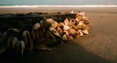
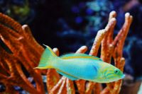
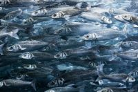
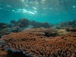
Several wrasse species inhabit the rocky reefs below Gaztelugatxe, feeding on invertebrates and playing a key role in the inshore food web along the Basque coast.
Atlantic wrasse are among the most colourful fish found along the Basque coastline. Species such as the cuckoo wrasse and corkwing wrasse are commonly encountered in the rocky reef habitats directly beneath the cliffs of Gaztelugatxe.
These fish are closely associated with kelp and rocky substrate, where they forage for crustaceans, molluscs, and small invertebrates. Their strong jaws allow them to extract prey from crevices and crack the shells of barnacles and mussels.
Wrasse play an important ecological role as cleaner fish, removing parasites from larger species. This behaviour has also made them commercially valuable as a biological solution in salmon aquaculture.
Their presence in the intertidal and shallow subtidal zone makes them a visible indicator of reef health. Healthy wrasse populations suggest clean water and an intact invertebrate community on the seafloor.
San Juan de Gaztelugatxe is a protected biotope in the Basque Country The environment is characterized by steep limestone cliffs, dramatic sea erosion, the iconic 241-step narrow stone bridge is only part of its heritage.
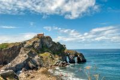
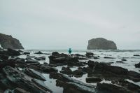
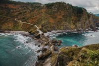
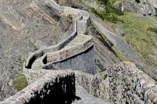
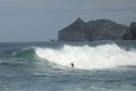
The protected biotope made from Gaztelugatxe and Aketxe Island creates a unique and important microecosystem for the surrounding wildlife.
The biotope designation protects the entire coastal strip, including the islet, its cliffs, and the surrounding marine environment from development and intensive human use.',
'The site is managed by the Basque Government and sits within the broader Urdaibai Biosphere Reserve network, connecting it to a wider framework of Atlantic coastal conservation.',
'Protection covers not only the visible landscape but also the submerged rocky reefs, intertidal zones, and the cliff-nesting bird colonies that depend on undisturbed conditions.',
'Visitor access is carefully managed through the single stone causeway, naturally limiting the number of people who can reach the islet at any one time.'
Preserving Gaztelugatxe's fragile balance requires responsible tourism, scientific research, and collective action.
Visitor numbers, access control, and seasonal restrictions help reduce disturbance to seabirds, vegetation, and marine habitats. Please keep the following tips in mind when visiting in order to reduce environmental impact and improve your experience at the hermitage.
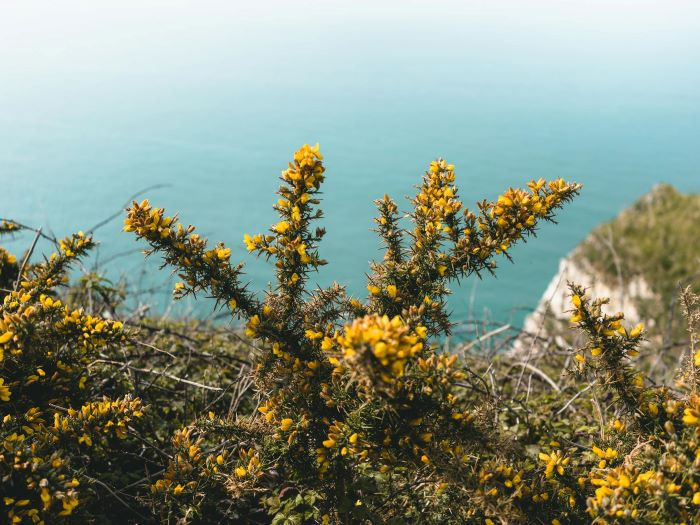
Protect the coastal ecosystem by staying on marked trails and not damaging the vegetation or any nesting grounds.
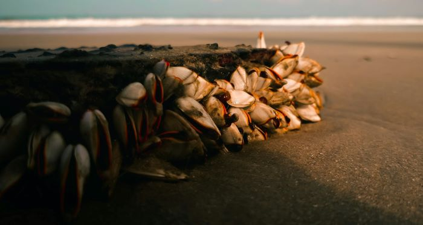
Garbage can do great harms to the local flora and fauna, and there are no bins along the narrow stairs of the islet. Be sure not to leave any trash behind, and pick up waste as you come across it.
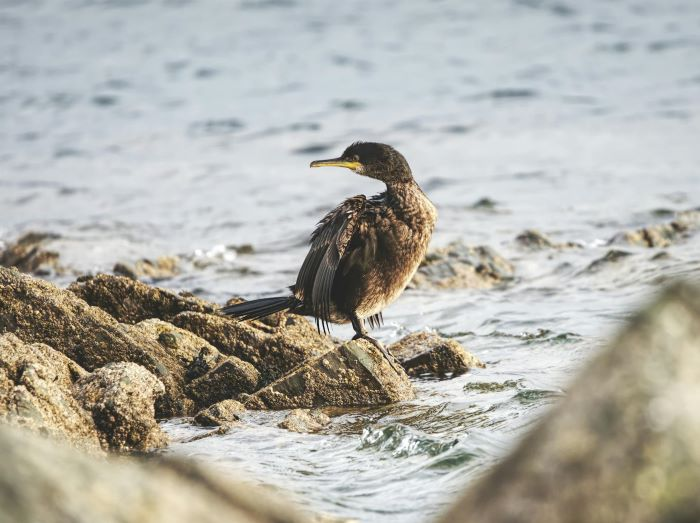
Don't bother or harrass any of the local birds or wildlife. These creatures live a balanced life, and intervening with thier schedules can cause more harm than good.
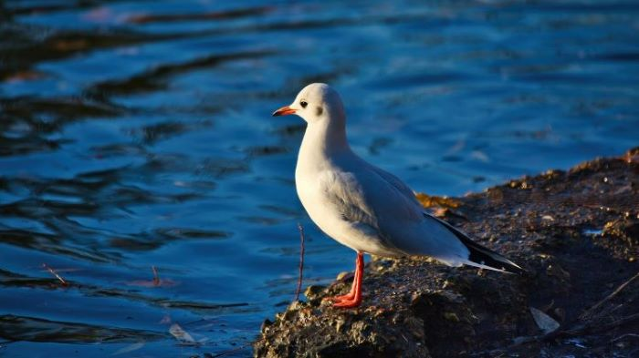
These creatures hold pivotal roles in the local ecosystem, and distrupting their diets can cause damage to them and their flocks.
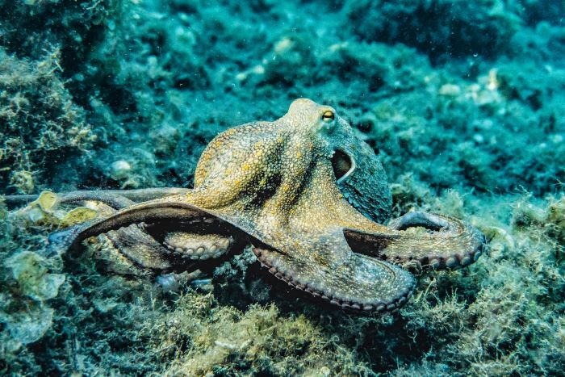
Dogs are welcome here, but we ask that you keep them leashed and secure. Not only can their impact do damage to local flora and fauna, but the rocky shores and steep cliffs can cause harm to your pets.
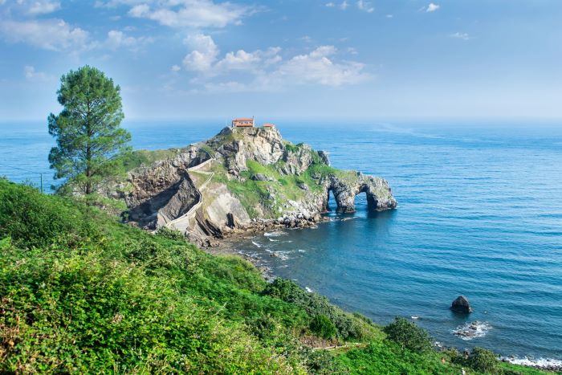
It's just as important to care for yourselves as it is the biotope. Be sure to drink water, rest, and stay protected from the sun.